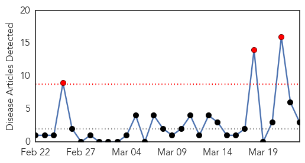
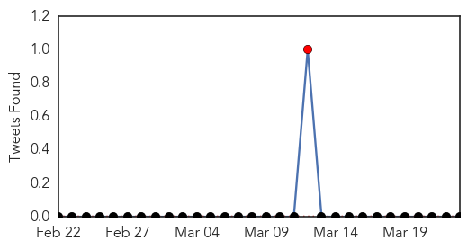
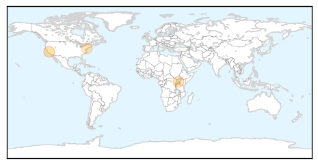

Meningitis
30-Day Web Trend
3 alerts, 0 warnings

30-Day Twitter Trend
1 alerts, 0 warnings

Article Locations
Article Confidences

Top Articles:
Top Tweets:
-
No tweets found for Mar 23, 2014
Hemmorhagic Fever
30-Day Web Trend
0 alerts, 0 warnings

30-Day Twitter Trend
1 alerts, 0 warnings

Article Locations

Article Confidences

Top Articles:
- 0.999
- Health Officials Dispatch Specialized Equipment and Issue Preventive Measures to Isolate Ebola Outbreak
- 0.999
- Sudan Vision Daily
- 0.998
- At least 59 people dead in Guinea Ebola outbreak
- 0.994
- Ebola Outbreak in Guinea, West Africa Kills 59 of 80 and Counting
- 0.893
- Guinea hemorrhagic outbreak – Sierra Leone may have got exposed
Top Tweets:
- 0.528
- RT: Guinea has notified WHO of an Ebola hemorrhagic fever outbreak in forested areas southeast of the country http://t.co/IIKxoBQjAO…